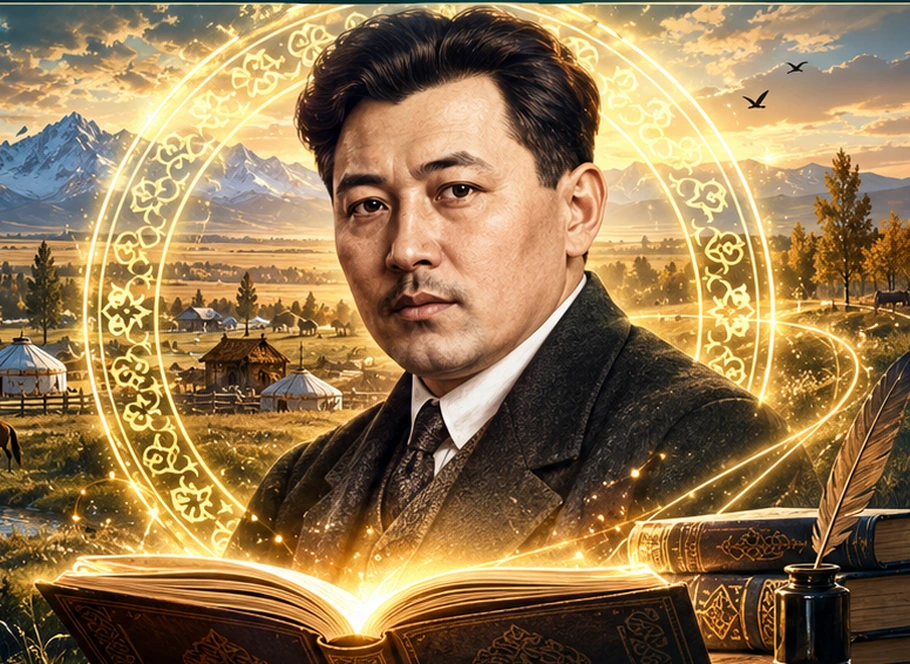

ЖАЗУШЫ · АҚЫН · ДРАМАТУРГ · ПУБЛИЦИСТБейімбет Майлин –
Бейімбет Майлин –
ұлт руханиятының
жарқын тұлғасы
Әдеби мұраны цифрлық дәуірде жаңғырту
✦
Қазақ әдебиетінің көрнекті тұлғасының өмір жолымен, шығармаларымен және рухани құндылықтарымен таныстыратын интерактивті әдеби кеңістік.
✧ 18941938 ✧
✦
✧
✦

❖ Бейімбет мұрасына саяхат ❖
Өмір жолы
Туған жері, балалық шағы, шығармашылық белестері
Шығармалары
Поэзиясы, прозасы және драматургиясы
Ұлттық құндылықтар
Шығармаларындағы рухани идеялар
Жаңашылдық
Әдеби мұраны цифрлық дәуірде жаңғырту
Тапсырмалар
Сыни ойлау және білімді бекіту
Дереккөздер
Сенімді әдеби және тарихи материалдар
Әдеби мұраға арналған интерактивті цифрлық кеңістік